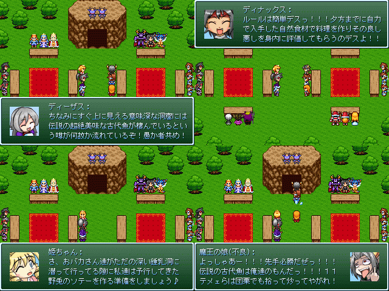

最高にCOOLな作者コメント：
あらすじその１(ＳＳ一枚目)
用意周到に準備をしてリナックスと魔王の娘コンビに
料理勝負を挑んだディナックスと王様の娘。
策略により何の変哲も無い洞窟を突き進む魔王の娘達だったが
ひょんな事から謎の古代遺跡やら巨大モンスターやらを
発見してとってもエキサイティングする。
果たしてリナックス達は料理勝負だという事を思い出して
地上に戻ってくる事が出来るのだろうか？
(内容は地上に居るディナックス達視点です)
あらすじその２(ＳＳ二枚目)
王国のアイドル(自称)である姫ちゃんに対してグーパンなどの
粗相を繰り返すダークリナックスに業を煮やした
真面目な女兵士達が城からダーク妹キャラの二人を閉め出す。
姫にたかる事で悠々自適な生活を過ごしてきたディナックスは
何とかして姫とコンタクトを取ろうとするが女兵士長に阻まれてしまう。
癇癪を起して駄々っ子の様に地に倒れ伏すディナックスの前に
ダークリーザスがもたらす奸計とは・・・？
※
一つ目の作品しか完成しない可能性があります。
内容は予告なく変更される可能性があります。
作品配信許可：○/動画公開許可：○
管理人コメント：
怒涛の文字量に脳の処理が追い付かないぜッ
↓この作品の感想を書く